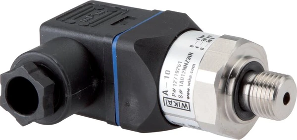
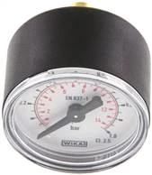

Trong mua hàng công nghiệp, một chi tiết thiếu sót trong yêu cầu báo giá có thể kéo dài cả tuần chờ đợi. Ngược lại, một RFQ (Request for Quotation) đầy đủ giúp bạn nhận báo giá WIKA chính xác ngay lần đầu — đúng model, đúng vật liệu, đúng thời gian giao. Bài viết này chỉ rõ những thông tin cần cung cấp để có giá tốt nhất. Fast Group Engineering là đại lý cung cấp hàng chính hãng WIKA (Germany) tại Việt Nam, cam kết phản hồi trong 24 giờ làm việc.

Gợi ý chọn nhanh
- Cần tra mã WIKA cũ hoặc tìm mã thay thế.
- Cần chuẩn hóa BOM/RFQ trước khi hỏi giá.
- Cần chọn nhóm sản phẩm đúng trước khi mở trang chi tiết.
- Part number, ảnh nameplate hoặc mã trong BOM.
- Số lượng, thời gian cần hàng và yêu cầu chứng từ.
- Thông số chính: dải đo, ren, vật liệu, output hoặc chiều dài.
- Trang tìm kiếm WIKA.
- Các danh mục sản phẩm chính.
- Trang liên hệ gửi RFQ.
Vì sao RFQ đầy đủ giúp có giá tốt và giao nhanh hơn?
Danh mục WIKA có hàng nghìn cấu hình: cùng một dòng đồng hồ áp suất nhưng khác dải đo, đường kính mặt, kiểu ren hay vật liệu đã là một mã hàng khác. Khi RFQ thiếu thông tin, người bán buộc phải giả định hoặc hỏi đi hỏi lại — vừa mất thời gian, vừa dễ báo nhầm model dẫn tới sai lệch khi giao hàng. Một RFQ rõ ràng cho phép chúng tôi khóa đúng part number, kiểm tra tồn kho, đề xuất mã thay thế khi cần và tối ưu giá theo số lượng ngay từ đầu. Với đơn dự án, sự chính xác này còn quyết định việc bạn có kịp tiến độ lắp đặt hay không.

8 thông tin cốt lõi trong một RFQ WIKA
Bạn không cần điền hết mọi ô — nhưng càng đủ các mục dưới đây, báo giá càng nhanh và sát:
| Nhóm | Thông tin | Ví dụ |
|---|---|---|
| Định danh | Model / part number hoặc ảnh nameplate | MW-140, DMU-1ES |
| Dải đo | Measuring range | 0–10 bar, 0–100 bar, -1…0 bar |
| Kích thước | Đường kính mặt (Ø) | 63 / 100 / 160 mm |
| Kết nối | Ren & vị trí chân | G¼ chân dưới, G½, NPT¼, chân sau |
| Loại/vật liệu | Khô, glycerin, safety, inox | Glycerin, vỏ inox 304/316 |
| Tín hiệu (nếu cảm biến) | Output | 4–20 mA, 2-wire |
| Cấp chính xác | Accuracy class | 1.0 / 1.6 / 2.5 |
| Số lượng & chứng chỉ | SL, tiến độ, CO/CQ | 50 pcs, giao 2 đợt, kèm CO+CQ |
Mẹo: nếu không rõ thông số, chỉ cần gửi ảnh nameplate chụp rõ — chúng tôi sẽ đọc part number và tái tạo cấu hình giúp bạn.
Mẫu RFQ gửi nhanh (copy & điền)
- Model / Part number:
- Dải đo (bar):
- Đường kính mặt (mm):
- Ren kết nối & vị trí chân:
- Loại (khô / glycerin / safety / cảm biến):
- Cấp chính xác:
- Số lượng & tiến độ giao:
- Yêu cầu CO/CQ, calibration: có / không
- Địa điểm giao hàng:
3 tình huống thường gặp — và cách xử lý
1. Chỉ có thiết bị cũ trong tay: chụp mặt số và nameplate, đo sơ ren kết nối. Chúng tôi dựng lại mã hoặc đề xuất mã tương đương còn sản xuất.
2. Mã trong bản vẽ đã ngừng sản xuất: gửi mã cũ, chúng tôi tra cross-reference sang model thay thế có thông số tương đương.
3. Đơn dự án nhiều dòng hàng: gửi cả BOM dạng Excel — báo giá gộp thường có mức giá và lead time tối ưu hơn hỏi lẻ từng mã.
Quy trình báo giá 24h
- Bạn gửi RFQ qua email, Zalo hoặc form trên website.
- Chúng tôi kiểm tra mã & tồn kho, đề xuất mã thay thế nếu cần.
- Gửi báo giá trong 24 giờ: đơn giá, thời gian giao, phương án chứng từ.
- Xác nhận đơn hàng và xuất hóa đơn VAT.
Những lỗi khiến báo giá bị chậm (và cách tránh)
Phần lớn các RFQ bị kéo dài không phải vì nhà cung cấp chậm, mà vì thông tin đầu vào buộc người báo giá phải quay lại xác nhận. Dưới đây là những lỗi phổ biến nhất:
- Chỉ ghi tên dòng, thiếu cấu hình: ví dụ "đồng hồ áp suất WIKA" mà không nêu dải đo, Ø mặt, ren — một dòng có thể ra hàng chục mã khác nhau.
- Nhầm đơn vị áp suất: bar, kg/cm², psi, MPa lẫn lộn khiến chọn sai thang đo. Hãy ghi rõ đơn vị.
- Không nêu vị trí chân: chân dưới (radial) hay chân sau (axial) quyết định lắp đặt; thiếu thông tin này dễ giao sai kiểu lắp.
- Bỏ qua yêu cầu chứng từ: nếu cần CO/CQ hay hồ sơ calibration mà không nêu từ đầu, báo giá sẽ phải làm lại.
- Số lượng và tiến độ không rõ: báo giá đơn lẻ khác báo giá dự án; nêu rõ để được mức giá đúng.
Hỏi giá lẻ hay gửi trọn bộ BOM?
Với đơn nhiều dòng hàng, cách bạn gửi yêu cầu ảnh hưởng trực tiếp đến giá và thời gian:
| Tiêu chí | Hỏi giá từng mã lẻ | Gửi trọn BOM |
|---|---|---|
| Thời gian xử lý | Lặp lại nhiều lượt | Xử lý một lần, gọn |
| Giá | Theo từng mã | Dễ tối ưu theo gói |
| Lead time | Rời rạc | Gộp lô, giao đồng bộ |
| Sai sót | Dễ lệch phiên bản | Đối chiếu toàn bộ một lượt |
Nếu có bảng khối lượng (BOM) dạng Excel, hãy gửi nguyên bản — chúng tôi rà từng dòng, đánh dấu mã thay thế và trả về báo giá gộp.
Điều khoản thương mại nên nêu sẵn trong RFQ
Để báo giá dùng được ngay cho khâu duyệt mua, bạn nên nêu trước một vài điều khoản: điều kiện giao hàng (giao tại kho bạn hay nhận tại kho chúng tôi), yêu cầu hóa đơn VAT, hình thức và thời hạn thanh toán, cùng địa điểm và thời gian cần hàng. Những thông tin này giúp báo giá phản ánh đúng tổng chi phí thay vì chỉ đơn giá thiết bị.
Vì sao nên mua qua đại lý chính hãng?
Mua WIKA qua đại lý chính hãng không chỉ là chuyện giá. Bạn được đảm bảo nguồn gốc, chứng từ CO/CQ hợp lệ, hỗ trợ đối chiếu cấu hình và tra mã thay thế khi model cũ ngừng sản xuất. Với thiết bị đo — nơi sai số và độ tin cậy ảnh hưởng trực tiếp đến an toàn vận hành — sự chắc chắn về nguồn hàng đáng giá hơn nhiều so với khoản chênh lệch nhỏ từ hàng trôi nổi.
Câu hỏi thường gặp
Tôi không biết part number thì báo giá được không?
Được. Gửi ảnh nameplate hoặc mô tả thông số, chúng tôi xác định mã phù hợp.
Báo giá có bao gồm CO/CQ không?
Có nếu bạn yêu cầu; hãy ghi rõ trong RFQ để chúng tôi tính vào phương án ngay từ đầu.
Đơn số lượng lớn có giá tốt hơn?
Có. Đơn dự án và đơn số lượng được áp mức giá riêng.
Thời gian giao hàng bao lâu?
Tùy hàng có sẵn kho hay đặt hãng; lead time cụ thể luôn được nêu rõ trong báo giá.
Gửi yêu cầu báo giá ngay
Chuẩn bị càng đủ thông tin, bạn càng sớm có giá và tiến độ chính xác để trình duyệt mua hàng.
- Email: minhduc@fastgroup.vn · Phone/Zalo: (+84) 938 888 958
- Hoặc điền form RFQ trên website — phản hồi trong 24h.
Fast Group Engineering – đại lý cung cấp hàng chính hãng WIKA (Germany) tại Việt Nam.
Bài liên quan: [WIKA chính hãng tại Việt Nam] · [Mua đồng hồ WIKA chính hãng ở đâu] · [Checklist thông số khi hỏi giá dụng cụ đo]